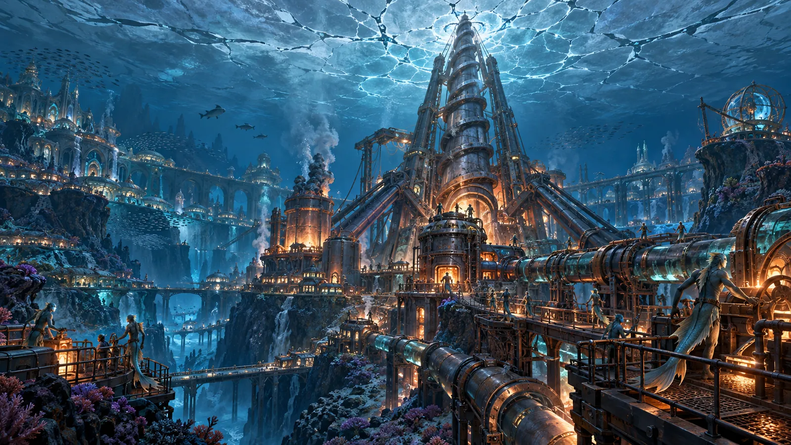
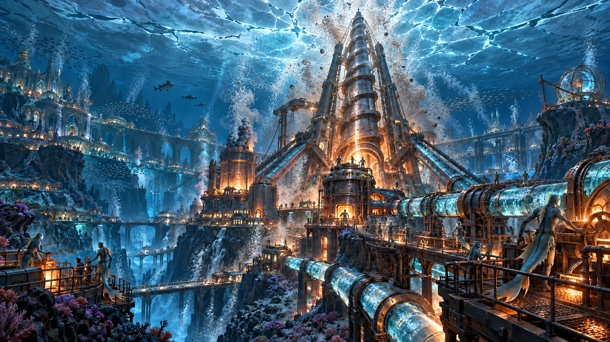
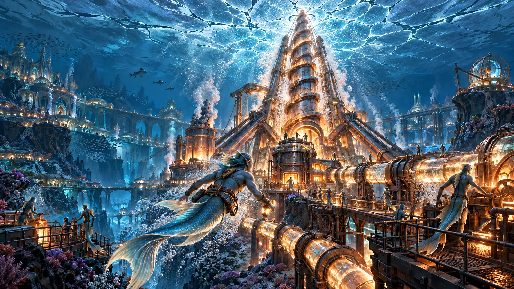
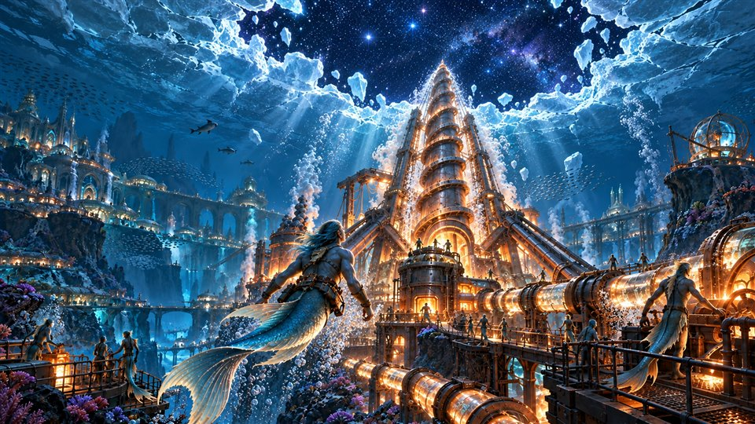

SHELLBREAK · STORYBOARD 01
天穹钻机 · 凿穿天壳
连续分镜图草案｜每个阶段都是完整画面




✦钻机蓄力
01 / 04
终章 · 天穹钻机
共振，启动。
整座海底城市，为这一击积蓄力量。
突破临界点
钻头触壳。
共振沿冰层蔓延，第一道裂纹亮起。
天壳崩解 · 鲛人仰望
裂痕，扩散。
鲛人游向钻机，望向逐渐打开的天穹。
文明的新纪元
天壳之外。
曾经仰望的边界，如今已在身后。
阶段完成破壳纪 · 仰望群星
约 6 秒｜画面切换，无叠加特效